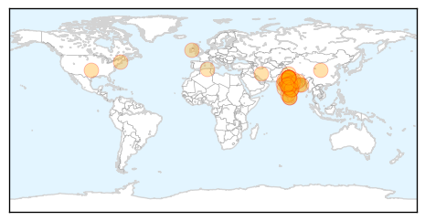
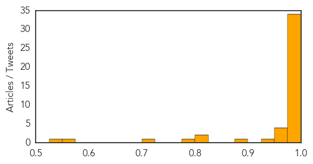
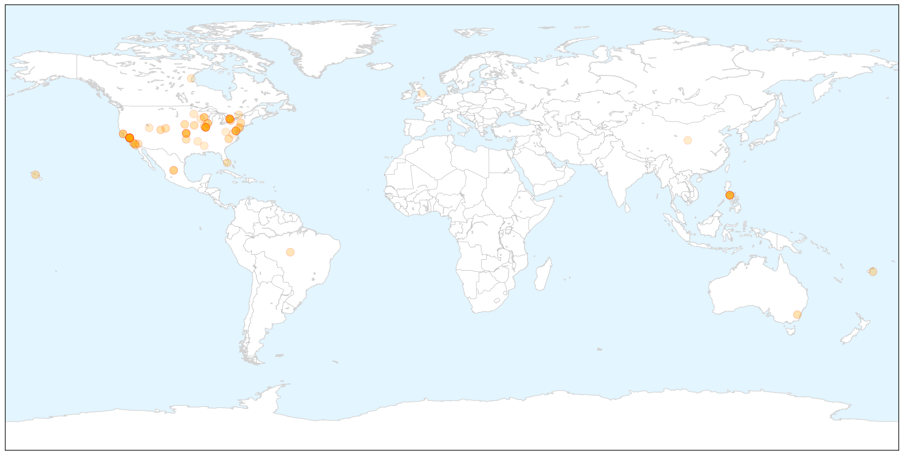

Swine Flu
30-Day Web Trend
23 alerts, 6 warnings

30-Day Twitter Trend
0 alerts, 0 warnings

Article Locations
Article Confidences
Top Articles:
- 1.000
- How YOU can protect yourself from swine flu
- 1.000
- Five myths about swine flu and what you should do if you are infected
- 1.000
- India faces worst swine flu outbreak in five years, but death rate down
- 1.000
- Death toll in swine flu climbs to 812 in India: All you need to know about the deadly virus
- 1.000
- Meghalaya under watch for swine flu
- 0.999
- Hospital falls short of swine flu protection
- 0.999
- 9311 Cases Of Swine Flu Registered, 624 Lives Claimed
- 0.999
- H1N1 threat grave as death toll rises to 79 across Madhya Pradesh
- 0.999
- Swine flu claims 81 in MP
- 0.999
- Kid dies, 5 more test positive for swine flu in Bhopal
- 0.999
- 3 Bhopal doctors infected by swine flu, 1 more die
- 0.999
- 37 new cases of swine flu in city on a single day jolts BMC
- 0.999
- Over 596 dead due to swine flu, Centre orders additional stocks of medicines
- 0.998
- First swine flu case in Northeast
- 0.998
- Critical units prepared to tackle H1N1
- 0.996
- Eight more swine flu deaths in Rajasthan, toll 183
- 0.996
- Swine flu kills 600-plus in India, refuses to die
- 0.995
- Swine flu toll rises to 150 in Gujarat
- 0.995
- Swine flu hits Jaipur hard, east, north Rajasthan ‘spared’
- 0.994
- No shortage of swine flu drug, says health official
- 0.994
- Healthcare experts turn to ayurveda to fight H1N1
- 0.993
- Gujarat government insists it is 'handling' swine flu as death toll hits 150
- 0.993
- 125 swine flu cases reported in UP
- 0.992
- H1N1 may subside in a week or two: Experts
- 0.991
- 100 deaths in 3 days; toll 624. Is India heading towards an epidemic?
- 0.990
- Swine flu test rates rise in Delhi, labs mint money : Delhi, News
- 0.987
- First swine flu death in Himachal Pradesh
- 0.986
- Swine flu under control in Karnataka: Minister for health U T Khader
- 0.985
- First swine flu death in Himachal
- 0.985
- First swine flu death in Himachal
- 0.984
- First swine flu death in Himachal
- 0.984
- First swine flu death in Himachal
- 0.984
- First swine flu death in Himachal
- 0.984
- 100 Indians Have Died of Swine Flu in the Last Three Days
- 0.974
- One H1N1 death confirmed; two more cases suspected
- 0.973
- Satna jail inmate dies of swine flu
- 0.965
- Swine flu claims nearly 600 lives in India , news, Health News, AsiaOne YourHealth
- 0.965
- H1N1 patients from Sheopur rush to Rajasthan treatment
- 0.929
- Swine flu claims nearly 600 lives in India this year - Xinhua
- 0.890
- A man of 49 dies of swine flu in Setif hospital
- 0.802
- Spurt in swine flu cases; toll over 620
- 0.800
- Defence Research and Development Establishment facility at Gwalior helps test H1N1 samples
- 0.783
- newkerala.com, India Regional News 20355
- 0.717
- H1N1 medicines still out of stock in Bengaluru
- 0.550
- Lifeline for pregnant woman with H1N1 and baby
- 0.544
- Lifeline for pregnant woman with H1N1 and baby
Top Tweets:
-
No tweets found for Feb 17, 2015
Measles
30-Day Web Trend
25 alerts, 3 warnings

30-Day Twitter Trend
3 alerts, 0 warnings

Article Locations

X

Article Confidences

Top Articles:
- 0.994
- Measles Cases Continue to Rise Across the United States
- 0.991
- Act quickly if measles suspected
- 0.991
- Measles outbreak: 5 questions and answers
- 0.990
- It's takes a team effort to fight disease outbreaks
- 0.989
- Measles Cases Continue to Rise Across the United States – WebMD
- 0.988
- Measles Continue to Spread, Reaching 141 Cases in 17 States
- 0.987
- Measles Continue to Spread, Reaching 141 Cases in 17 States
- 0.986
- Authorities still trying to determine how measles outbreak began at Disney parks
- 0.986
- 20 new measles cases appear nationwide
- 0.984
- Measles in Hawai‘i could be a problem, experts say
- 0.984
- No, We Can’t Blame Measles on Immigrants
- 0.982
- Spring break brings new risk for measles exposure
- 0.975
- 2nd case of measles confirmed in DC - Story
- 0.975
- Preventing Measles
- 0.973
- Measles outbreak remains a mystery
- 0.968
- Canberra on alert after ACT Health records first measles case of year
- 0.967
- Fears of measles crossing southern border into U.S. are unfounded
- 0.967
- Colo. measles vaccine rate among lowest in U.S.
- 0.963
- No measles cases reported in area, but vaccinations still encouraged
- 0.959
- Confirmed Illinois Measles Cases Climb to 14
- 0.957
- Simulation Brings Facts to Measles Outbreak and Vaccination Debate
- 0.957
- Isabel Wallace: Why this measles outbreak is new and worrying
- 0.956
- Villanova nursing professor advises parents on steps to take to prevent measles
- 0.955
- Milford health officials urge parents to immunize for measles
- 0.951
- Calif. Measles Outbreak Underscores Need for Vaccination
- 0.950
- More measles cases tied to Disneyland, Illinois day care
- 0.948
- Measles cases on North Olympic Peninsula hold steady at two as officials await test results -- Port Angeles Port Townsend Sequim Forks Jefferson County Clallam County Olympic Peninsula Daily NEWS
- 0.943
- More measles cases tied to Disneyland, Illinois day care
- 0.942
- Osceola Sentinel Tribune
- 0.942
- Marin health officials caution against 'measles parties'
- 0.936
- Fears of measles crossing southern border into U.S. are unfounded
- 0.933
- State warns protect yourself before travel
- 0.933
- Doctors answer questions about measles vaccine, symptoms
- 0.931
- Why can't my newborn be vaccinated? Infants and measles: What parents need to know
- 0.922
- The Disease Debate of 2015
- 0.919
- California advises travelers to the Philippines to ensure they are vaccinated
- 0.918
- California health officials urge measles vaccine before spring travel
- 0.917
- California health officials urge measles vaccine before spring travel
- 0.915
- Families count the cost of vaccine falsehoods
- 0.915
- The Vineyard Gazette - Martha's Vineyard News
- 0.897
- Salem Hospital sets protocol for measles response
- 0.889
- Local health unit issues measles warning
- 0.880
- Health officials: One out of 10 Oklahoma toddlers has not received measles vaccine
- 0.873
- 125 measles cases in U.S. linked to Disneyland
- 0.865
- Incomplete vaccination records leave schools guessing
- 0.861
- Infant who attended Palatine day care the 14th measles case in Illinois
- 0.852
- Ontario newborn linked to mom's viral measles rant gets the all-clear
- 0.848
- Vaccination rates in Central Florida below 95 percent
- 0.841
- Warning about US measles outbreak
- 0.834
- More US measles cases tied to Disneyland, Illinois day care
Showing top 50 articles...
Top Tweets:
-
No tweets found for Feb 17, 2015